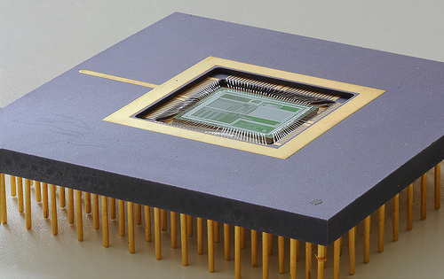

Iniciació a la programació
Com en qualsevol procés d’aprenentatge, cal començar pel principi. És important tenir clars un conjunt de conceptes bàsics que ajudin a comprendre els conceptes més avançats que vindran posteriorment. En aquest cas, es tracta d’establir què és un programa, com funciona i quin és el model general per crear-ne un. Només un cop ho tingueu clar us podeu plantejar seure davant de l’ordinador i començar a programar.
Què és un programa?
Un primer pas per poder començar a estudiar com cal fer un programa informàtic és tenir clar què és un programa. En contrast amb altres termes usats en informàtica, és possible referir-se a un “programa” en el llenguatge col·loquial sense haver d’estar parlant necessàriament d’ordinadors. Us podríeu estar referint al programa d’un cicle de conferències o de cinema. Però, tot i no tractar-se d’un context informàtic, aquest ús ja us aporta una idea general del seu significat: un conjunt d’esdeveniments ordenats de manera que succeeixen de forma seqüencial en el temps, un darrere l’altre.
Un altre ús habitual, ara ja sí que vinculat al context de les màquines i els autòmats, podria ser per referir-se al programa d’una rentadora o d’un robot de cuina. En aquest cas, però, el que succeeix és un conjunt no tant d’esdeveniments, sinó d’ordres que l’electrodomèstic segueix ordenadament. Un cop seleccionat el programa que volem, l’electrodomèstic fa totes les tasques corresponents de manera autònoma.
Per exemple, el programa d’un robot de cuina per fer una crema de blat de moro seria:
- Espera que introduïu blat de moro i mantega.
- Gira durant un minut, avançant progressivament de la velocitat 1 a la 5.
- Espera que introduïu llet i sal.
- Gira durant 30 segons a velocitat 7.
- Gira durant 10 minuts a velocitat 3 mentre cou a una temperatura de 90 graus.
- S’atura. La crema està llesta!
Aquest conjunt d’ordres no és arbitrari, sinó que serveix per dur a terme una tasca de certa complexitat que no es pot fer d’un sol cop. S’ha de fer pas per pas. Totes les ordres estan vinculades entre si per arribar a assolir aquest objectiu i, sobretot, és molt important la disposició en què es duen a terme.
Entrant ja, ara sí, en el món dels ordinadors, la manera com s’estructura la mena de tasques que aquests poden fer té molt en comú amb els programes d’electrodomèstics. En aquest cas, però, en lloc de transformar ingredients (o rentar roba bruta, si es tractés d’una rentadora), el que l’ordinador transforma és informació o dades. Un programa informàtic no és més que un seguit d’ordres que es porten a terme seqüencialment, aplicades sobre un conjunt de dades.
Quines dades processa un programa informàtic? Bé, això dependrà del tipus de programa:
- Un editor processa les dades d’un document de text.
- Un full de càlcul processa dades numèriques.
- Un videojoc processa les dades que diuen la forma i ubicació d’enemics i jugadors, etc.
- Un navegador web processa les ordres de l’usuari i les dades que rep des d’un servidor a Internet.
Per tant, la tasca d’un programador informàtic és escollir quines ordres constituiran un programa d’ordinador, en quin ordre s’han de dur a terme i sobre quines dades cal aplicar-les, perquè el programa porti a terme la tasca que ha de resoldre. La dificultat de tot plegat serà més gran o petita depenent de la complexitat mateixa d’allò que cal que el programa faci. No és el mateix establir què ha de fer l’ordinador per resoldre una multiplicació de tres nombres que per processar textos o visualitzar pàgines a Internet.
D’altra banda, un cop fet el programa, cada cop que l’executeu, l’ordinador complirà totes les ordres del programa.
Executar un programa
Per “executar un programa” s’entén fer que l’ordinador segueixi totes les seves ordres, des de la primera fins la darrera.
De fet, un ordinador és incapaç de fer absolutament res per si mateix, sempre cal dir-li què ha de fer. I això se li diu mitjançant l’execució de programes. Tot i que des del punt de vista de l’usuari pot semblar que quan es posa en marxa un ordinador aquest funciona sense executar cap programa concret, cal tenir en compte que el seu sistema operatiu és un programa que està sempre en execució.
Tipus d'ordres que accepta un ordinador
Per dur a terme la tasca encomanada, un ordinador pot acceptar diferents tipus d’ordres. Aquestes es troben limitades a les capacitats dels components que el conformen, de la mateixa manera que el programa d’una rentadora no pot incloure l’ordre de gratinar, ja que no té gratinador. Per tant, és important tenir present aquest fet per saber què es pot demanar a l’ordinador quan creeu un programa.
L’estructura interna de l’ordinador es divideix en un seguit de components, tots comunicats entre si, tal com mostra la figura de manera molt simplista, però suficient per començar. Cada ordre d’un programa està vinculada d’una manera o altra a algun d’aquests components.

El processador és el centre neuràlgic de l’ordinador i l’element que és capaç de dur a terme les ordres de manipulació i transformació de les dades. Un conjunt de dades es pot transformar de moltes maneres, segons les capacitats que ofereixi cada processador. Tot i així, hi ha moltes transformacions que tots poden fer. Un exemple és la realització d’operacions aritmètiques (suma, resta, multiplicació, divisió), tal com fan les calculadores.
Processador
El processador també és conegut popularment per les seves sigles en anglès: CPU (central processing unit, unitat central de processament).
La memòria permet emmagatzemar dades mentre aquestes no estan essent directament manipulades pel processador. Qualsevol dada que ha de ser tractada per un programa estarà a la memòria. Mitjançant el programa es pot ordenar al processador que desi certes dades o que les recuperi en qualsevol moment. Normalment, quan es parla de memòria a aquest nivell ens referim a memòria dinàmica o RAM (random access memory, memòria d’accés aleatori). Aquesta memòria no és persistent i un cop acaba l’execució del programa totes les dades amb les quals tractava s’esvaeixen. Per tant, la informació no es desarà entre successives execucions diferents d’un mateix programa.
En certs contextos és possible que ens trobem també amb memòria ROM (read-only memory, memòria només de lectura). En aquesta, les dades estan predefinides de fàbrica i no s’hi pot emmagatzemar res, només podem llegir el que conté. Cal dir que no és el cas més habitual.
El sistema d’entrada/sortida (abreujat com a E/S) permet l’intercanvi de dades amb l’exterior de l’ordinador, més enllà del processador i la memòria. Això permet traduir la informació processada en accions de control sobre qualsevol perifèric connectat a l’ordinador. Un exemple típic és establir una via de diàleg amb l’usuari, ja sigui per mitjà del teclat o del ratolí per demanar-li informació, com per la pantalla, per mostrar els resultats del programa. Aquest sistema és clau per convertir un ordinador en una eina de propòsit general, ja que el capacita per controlar tota mena d’aparells dissenyats per connectar-s’hi.
Una altra possibilitat important de l’ordinador, ateses les limitacions del sistema de memòria, és poder interactuar amb el maquinari d’emmagatzemament persistent de dades, com un disc dur.
Un ordinador és com una pizzeria
Si es vol fer un símil amb el nostre món de cada dia, un ordinador és com la cuina d’una pizzeria que accepta comandes telefòniques. Fer una comanda equival a demanar l’inici de l’execució d’un programa. Per dur a terme aquesta comanda, caldrà manipular un seguit d’ingredients, que representarien les dades. El cuiner amb els seus estris (forn, pastador, etc.) serien el processador, ja que manipulen i transformen els ingredients. La nevera, els armaris o els contenidors, d’on el cuiner pot treure ingredients o on els pot desar mentre no els està manipulant, representarien la memòria. El sistema d’entrada/sortida serien els elements de comunicació amb l’exterior de la pizzeria, com el motorista que porta la pizza o el telèfon que el cuiner pot utilitzar per demanar que li portin nous ingredients quan se li acaben, demanar informació addicional a l’usuari (“S’ha acabat el pebrot, va bé si hi posem ceba?”), o avisar-lo d’algun esdeveniment (“Em sap greu, trigarà una mica més del previst”). De fet, continuant amb el símil, el cuiner prepara una pizza seguint un conjunt de passes. En aquest cas la recepta són les ordres que ha de seguir el programa. I si el cuiner no té la recepta no pot dur a terme la comanda.
Partint d’aquesta descripció de les tasques que pot dur a terme un ordinador segons els elements que el componen, un exemple de programa per multiplicar dos nombres és el mostrat a la taula. El teniu expressat en llenguatge natural. Noteu com les dades han d’estar sempre emmagatzemades a la memòria per poder-hi operar.
Llenguatge natural
El llenguatge natural és aquell que emprem els humans per comunicar-nos habitualment.
| Ordre per donar | Element que l’efectua |
|---|---|
| 1. Llegeix un nombre del teclat. | E/S (teclat) |
| 2. Desa el nombre a la memòria. | Memòria |
| 3. Llegeix un altre nombre del teclat. | E/S (teclat) |
| 4. Desa el nombre a la memòria. | Memòria |
| 5. Recupera els nombres de la memòria i fes-ne la multiplicació. | Processador |
| 6. Desa el resultat a la memòria. | Memòria |
| 7. Mostra el resultat a la pantalla. | E/S (pantalla) |
Crear un programa executable...
Per crear un programa cal establir quines ordres s’han de donar a l’ordinador i en quina seqüència. Ara bé, avui dia els ordinadors encara no entenen el llenguatge natural (com s’utilitza a la taula), ja que està ple d’ambigüitats i aspectes semàntics que poden dependre del context.
Per especificar les ordres que ha de seguir un ordinador el que s’usa és un llenguatge de programació. Es tracta d’un llenguatge artificial dissenyat expressament per crear algorismes que puguin ser duts a terme per l’ordinador.
Artificial
Per artificial entenem allò que no ha evolucionat a partir de l’ús entre humans, sinó que ha estat creat expressament, en aquest cas per ser usat amb els ordinadors.
Igual com hi ha moltes llengües diferents, també hi ha molts llenguatges de programació, cadascun amb les seves característiques pròpies, que els fan més o menys indicats per resoldre uns tipus de tasques o altres. Tots, però, tenen una sintaxi molt definida, que cal seguir perquè l’ordinador interpreti correctament cada ordre que se li dóna. És exactament el mateix que passa amb les llengües del món: per expressar els mateixos conceptes, el català i el japonès usen paraules i normes de construcció gramatical totalment diferents entre si.
En un llenguatge de programació determinat, el seguit d’ordres concretes que es demana a l’ordinador que faci s’anomena conjunt d’instruccions.
Normalment, el conjunt d’instruccions d’un programa s’emmagatzema dins d’un conjunt de fitxers. Aquests arxius els edita el programador (vosaltres) per crear o modificar el programa. Per als programes més senzills n’hi ha prou amb un únic fitxer, però per als més complexos en pot caldre més d’un.
Els llenguatges de programació es poden classificar en diferents categories segons les seves característiques. De fet, algunes de les propietats del llenguatge de programació tenen conseqüències importants sobre el procés que cal seguir per poder crear un programa i per executar-lo. Hi ha dues maneres de classificar els llenguatges de programació:
- Segons si es tracta d’un llenguatge compilat o interpretat. Aquesta propietat afecta les passes que cal seguir per arribar a obtenir un fitxer executable. O sigui, un fitxer amb el mateix format que el de les aplicacions que podeu tenir instal·lades al vostre ordinador.
- Segons si es tracta d’un llenguatge de nivell alt o baix. Aquesta propietat indica el grau d’abstracció del programa i si les seves instruccions estan més o menys estretament vinculades al funcionament del maquinari d’un ordinador.
Aquestes dues categories no són mútuament excloents.
...en llenguatge de màquina
El llenguatge de màquina o codi de màquina és el llenguatge que triaríem si volguéssim fer un programa que treballés directament sobre el processador. És interessant de conèixer perquè ajuda a entendre el procés de generació d’un programa.
En aquest llenguatge, cadascuna de les instruccions es representa amb una seqüència binària, en zeros (0) i uns (1), i tot el conjunt d’instruccions del programa queda emmagatzemat de manera consecutiva dins d’un fitxer de dades en binari. Si l’intenteu obrir amb un editor de text, el que veureu en pantalla són símbols totalment incomprensibles.
Quan es demana l’execució d’un programa en llenguatge de màquina, aquest es carrega a la memòria de l’ordinador. Tot seguit, el processador va llegint una per una cadascuna de les instruccions, les descodifica i les converteix en senyals elèctrics de control sobre els elements de l’ordinador per tal que facin la tasca demanada. A molt baix nivell, gairebé es pot arribar a establir una correspondència entre els 0 i 1 de cada instrucció i l’estat resultant dels transistors dins dels xips interns del processador.
Transistor
El transistor és el component bàsic d’un sistema digital. Es pot considerar com un interruptor, en què 1 indica que hi passa corrent i 0 que no en passa.
El conjunt d’instruccions que és capaç de descodificar correctament un processador i convertir en senyals de control és específic per a cada model i està definit pel seu fabricant. El dissenyador de cada processador se’n va inventar la sintaxi i les instruccions del codi màquina d’acord amb les seves necessitats quan va dissenyar el maquinari. Per tant, les instruccions en format binari que pot descodificar un tipus de processador poden ser totalment incompatibles amb les que pot descodificar un altre. Això és lògic, ja que els seus circuits són diferents i, per tant, els senyals elèctrics de control que ha de generar són diferents per a cada cas. Dues seqüències de 0 i 1 iguals poden tenir efectes totalment diferents en dos processadors de models diferents, o resultar incomprensibles per a algun.
- 
- Com es pot apreciar, el processador realment és el centre neuràlgic i el cervell de l'ordinador, ja que una altra de les seves tasques és controlar l'execució ordenada de cada instrucció. Imatge de mark.sze
Un programa escrit en llenguatge de màquina és específic per a un tipus de processador concret. No es pot executar sobre cap altre processador, tret que siguin compatibles. Un processador concret només entén directament el llenguatge de màquina especificat pel seu fabricant.
Tot i que, com es pot veure, en realitat hi ha molts llenguatges de màquina diferents, s’usa aquesta terminologia per englobar-los a tots. Si es vol concretar més es pot dir “llenguatge de màquina del processador X”.
Ara bé, estrictament parlant, si optéssiu per fer un programa en llenguatge de màquina, mai no ho faríeu generant directament fitxers amb tot de seqüències binàries. Només us heu d’imaginar l’aspecte d’un programa d’aquesta mena en format imprès, consistent en una enorme tirallonga de 0 i 1. Seria totalment incomprensible i pràcticament impossible d’analitzar. En realitat el que s’usa és un sistema auxiliar de mnemotècnics en el qual s’assigna a cada instrucció en binari un identificador en format de text llegible, més fàcilment comprensible per als humans. D’aquesta manera, és possible generar un programa a partir de fitxers en format text.
Aquest recull de mnemotècnics és el que es coneix com el llenguatge assemblador.
A títol il·lustratiu, la taula mostra les diferències d’aspecte entre un llenguatge de màquina i assemblador equivalents per a un processador de model 6502. Sense entrar en més detalls, és important esmentar que tant en llenguatge de màquina com en assemblador cadascuna de les instruccions es correspon a una tasca molt simple sobre un dels seus components. Fer que l’ordinador faci tasques complexes implica haver de generar moltes instruccions en aquests llenguatges.
| Instrucció assemblador | Llenguatge de màquina equivalent |
|---|---|
| LDA #6 | 1010100100000110 |
| CMP &3500 | 110011010000000000110101 |
| LDA &70 | 1010010101110000 |
| INX | 11101111 |
...mitjançant un llenguatge compilat
Per crear un programa el que farem és crear un arxiu i escriure-hi el seguit d’instruccions que volem que l’ordinador executi. Per començar n’hi haurà prou amb un editor de text simple.
Editors de text simples
Un editor de text simple és aquell que permet escriure-hi només text sense format. En són exemples el Bloc de Notes (Windows), el Gedit o l’Emacs (Unix).
Un cop s’ha acabat d’escriure el programa, el conjunt de fitxers de text resultant on es troben les instruccions es diu que conté el codi font.
Aquest sistema de programar més còmode per als humans fa sorgir un problema, i és que els fitxers de codi font no contenen llenguatge de màquina i, per tant, resulten incomprensibles per al processador. No se li pot demanar que l’executi directament; això només és possible usant llenguatge de màquina. Per poder generar codi màquina cal fer un procés de traducció des dels mnemotècnics que conté cada fitxer a les seqüències binàries que entén el processador.
El procés anomenat compilació és la traducció del codi font dels fitxers del programa en fitxers en format binari que contenen les instruccions en un format que el processador pot entendre. El contingut d’aquests fitxers s’anomena codi objecte. El programa que fa aquest procés s’anomena compilador.
Per al cas de l’assemblador el procés de compilació és molt senzill, ja que és una mera traducció immediata de cada mnemotècnic a la seqüència binària que li correspon. En principi, amb això ja hi hauria prou per poder fer qualsevol programa, però cenyir-se només a l’ús de llenguatge assemblador comporta certs avantatges i inconvenients que fan que en realitat no sigui usat normalment, només en casos molt concrets.
El codi objecte de les instruccions a la taula té aquest aspecte:
101010010000011011
001101000000000011
010110100101011100
0011101111
Per la banda positiva, amb assemblador el programador té control absolut del maquinari de l’ordinador a nivell molt baix. Pràcticament es pot dir que controla cada senyal elèctric i els valors dels transistors dins dels xips. Això permet arribar a fer programes molt eficients en què l’ordinador fa exactament allò que li dieu sense cap mena d’ambigüitat. En contraposició, els programes en assemblador només funcionen per a un tipus de processador concret, no són portables. Si s’han de fer per a una altra arquitectura, normalment cal començar de zero. A més a més —i és el motiu de més pes per pensar-s’ho dues vegades si es vol usar aquest llenguatge— crear un programa complex requereix un grau enorme d’expertesa sobre com funciona el maquinari del processador, i la llargària seria considerable. Això fa que siguin programes complicats d’entendre i que calgui dedicar molt de temps a fer-los.
Llenguatges compilats de nivell alt
Actualment, per generar la immensa majoria de programes s’utilitzen els anomenats llenguatges de nivell alt. Aquests ofereixen un conjunt d’instruccions que són fàcils d’entendre per a l’ésser humà i, per tant, posseeixen un grau d’abstracció més alt que el llenguatge assemblador (ja que no estan vinculats a un model de processador concret). Cadascuna de les instruccions es correspon a una ordre genèrica en què el més important és el seu aspecte funcional (què es vol fer), sense que importi com es materialitza això en el maquinari de l’ordinador ni molt menys en senyals elèctrics. En qualsevol cas, cal advertir que aquesta classificació no sempre és absoluta. Es pot dir que un llenguatge és de “nivell més alt o baix que un altre”, segons el grau relatiu d’abstracció de les seves instruccions i la seva proximitat al funcionament intern del maquinari d’un ordinador.
Programes de nivell baix
Es considera que el codi de màquina i l’assemblador són els llenguatges de nivell més baix existents, ja que les seves instruccions depenen directament del tipus de processador.
El procés per generar un programa a partir d’un llenguatge de nivell alt és molt semblant al que cal seguir per fer-ho usant el llenguatge assemblador, ja que les instruccions també s’escriuen en format text dins de fitxers de codi font. L’avantatge addicional és que el format i la sintaxi ja no estan lligats al processador, i per tant, poden tenir el format que vulgui l’inventor del llenguatge sense que hagi de tenir en compte el maquinari dels ordinadors on s’executarà. Normalment, les instruccions i la sintaxi han estat triades per tal de facilitar la tasca de creació i comprensió del codi font del programa.
De fet, en els llenguatges de nivell alt més freqüents, entre els quals hi ha el que aprendreu a usar en aquest mòdul, les instruccions dins d’un programa s’escriuen com una seqüència de sentències.
Una sentència és l’element mínim d’un llenguatge de programació, sovint identificat per una cadena de text especial, que serveix per descriure exactament una acció que el programa ha de fer.
Per tant, a partir d’ara s’usarà el terme sentència en lloc d’instrucció quan el text es refereixi a un llenguatge d’aquest tipus.
Un cop s’han acabat de generar els fitxers amb el seu codi font, aquests també s’han de compilar per tal de traduir-los a codi objecte. Ara bé, en aquest cas, el procés de traducció a codi objecte serà força més complicat que des d’assemblador. El compilador d’un llenguatge de nivell alt és un programa molt més complex. Pel que fa al procés de compilació, una conseqüència addicional del fet que el llenguatge no depengui directament del tipus de processador és que des d’un mateix codi font es pot generar codi objecte per a diferents processadors. Només cal disposar d’un compilador diferent per a cada tipus de processador que es vulgui suportar. Per tant, un mateix codi font original pot servir per generar programes que funcionin amb diferents tipus de processador sense haver-lo de modificar cada vegada.
Ja que per a cada fitxer de codi font es genera un fitxer de codi objecte, després del procés de compilació hi ha un pas addicional anomenat enllaçament (link), en el qual aquests dos codis es combinen per generar un únic fitxer executable. Col·loquialment, quan us demanem que compileu un programa ja se sol donar per fet que també s’enllaçarà, si s’escau. Tot i així, formalment es consideren dues passes diferenciades.
La figura mostra un esquema que serveix de resum del procés de generació del fitxer executable usant un llenguatge compilat.

Alguns exemples de llenguatges de nivell alt compilats molt populars són C o Pascal. Com s’ha vist, l’assemblador també és un llenguatge compilat, però de nivell baix.
Errors de compilació
El compilador és fonamental per generar un programa en un llenguatge compilat, ja sigui de nivell alt o baix. Per poder fer la seva feina de manera satisfactòria i generar codi objecte a partir del codi font cal que les instruccions segueixin perfectament la sintaxi del llenguatge triat. Per exemple, cal usar només les instruccions especificades en el llenguatge i fer-ho en el format adient. Si no és així, el compilador és incapaç d’entendre l’ordre que es vol donar a l’ordinador i no sap com traduir-la a llenguatge màquina.
Quan el compilador detecta que una part del codi font no segueix les normes del llenguatge, el procés de compilació s’interromp i anuncia que hi ha un error de compilació.
Quan passa això, caldrà repassar el codi font i intentar esbrinar on hi ha l’errada. Normalment, el compilador dóna algun missatge sobre què considera que està malament.
Cal ser conscients que un programador pot arribar a dedicar una bona part del temps de la generació del programa a la resolució d’errors de compilació. Ara bé, que un programa compili correctament només vol dir que s’ha escrit d’acord amb les normes del llenguatge de programació, però no aporta cap garantia que sigui correcte, és a dir, que faci correctament la tasca per a la qual s’ha ideat.
Els llenguatges de programació i el llenguatge natural
Intentant fer un símil entre un llenguatge de programació i el llenguatge natural, si una persona que parla català és com un compilador, que és capaç d’entendre o traduir una frase sempre que se segueixin les normes d’aquesta llengua, sense una mica d’imaginació se li pot fer difícil entendre la frase: “gelat kérem un comra”. Hi ha paraules en un ordre estrany, i a més a més n’hi ha d’altres que no pertanyen al català o que no simplement no existeixen…
D’altra banda, la frase “El gelat condueix un full de paper” pot ser gramaticalment correcta i no tenir cap error de sintaxi. Algú que parli català la pot entendre. Ara bé, és clar que alguna cosa no encaixa. En la comprensió del significat d’un llenguatge hi ha aspectes que van més enllà de la sintaxi, i els llenguatges de programació no en són excepció.
...mitjançant un llenguatge interpretat
En contraposició del llenguatges compilats, tenim els llenguatges interpretats. En aquest cas, no es fa una distinció interna entre nivell alt i baix, ja que la immensa majoria de llenguatges interpretats són de nivell alt. El que interessa és entendre’n la idea general del funcionament i les diferències amb els compilats. Com en el cas dels llenguatges compilats, els programes també s’escriuen en fitxers de text que contenen codi font. La divergència sorgeix immediatament després d’acabar d’escriure’ls, en la manera com es genera un fitxer executable. El quid de la qüestió és que, precisament, ni es genera cap codi objecte ni cap fitxer executable. Es treballa directament amb el fitxer de codi font. Un cop aquest està escrit, el procés de creació del programa executable ha finalitzat.
Imagineu un programa que accepta un seguit de dades que codifiquen unes instruccions, les va llegint una per una i les va processant de manera que actua d’una manera o d’una altra, és a dir, executa una part o una altra del seu propi codi objecte segons el tipus d’instrucció llegida. A fi de comptes, seria un programa que imita el comportament d’un processador, però a escala de programari. Doncs això és exactament un intèrpret.
Intèrpret
Alerta, un intèrpret no tradueix el codi font del programa a codi objecte i llavors l’executa. El que fa és executar diferents instruccions del seu propi codi segons cada instrucció llegida del codi font.
Un llenguatge interpretat s’executa indirectament, mitjançant l’ajut d’un programa auxiliar anomenat intèrpret, que processa el codi font i en gestiona l’execució.
Com que un intèrpret és un programa executable està vinculat a un processador i a un sistema operatiu concrets.
Igual que en els llenguatges compilats, pot succeir que el programador hagi inclòs sense adonar-se’n alguna errada de sintaxi en les instruccions. En aquest cas, serà l’intèrpret qui mostrarà l’error i es negarà a executar el programa fins que hagi estat solucionat.
Alguns llenguatges interpretats usen una aproximació híbrida. El codi font es compila i com a resultat es genera un fitxer de dades binàries anomenades bytecode. Aquest bytecode, però, no és formalment codi objecte, ja que no és capaç d’entendre’l el maquinari de cap processador. Només un intèrpret el pot processar i executar. Simplement és una manera d’emmagatzemar més eficient i en menys espai, en format binari i no en text, les instruccions incloses al codi font. Aquest és el motiu pel qual, tot i necessitar un procés de compilació, aquests llenguatges no es consideren realment compilats i es continuen classificant com a interpretats.
Col·loquialment, la generació de bytecode a partir del codi font s’anomena igualment compilar.
Per les seves característiques, els llenguatges interpretats no requereixen un procés posterior d’enllaçament.
La figura mostra un esquema del procés d’execució d’un programa en llenguatge interpretat. Noteu que en el cas d’un llenguatge amb bytecode, el que es proporciona a l’intèrpret són fitxers amb la versió del codi font prèviament compilat en bytecode, i no el codi font directament.

Entre els llenguatges interpretats més coneguts trobem JavaScript, PHP o Perl. Molts són llenguatges de script, que permeten el control d’aplicacions dins un sistema operatiu, dur a terme processos per lots (batch) o generar dinàmicament contingut web. Entre els llenguatges interpretats basats en bytecode, Java és un dels més populars.
Entorns integrats d'edició
Un cop s’ha descrit el procés general per desenvolupar i arribar a executar un programa, es fa evident que cal tenir instal·lats i correctament configurats dos programes completament diferents i independents al vostre ordinador per desenvolupar-los: editor, per una banda, i compilador (incloent l’enllaçador) o intèrpret per l’altra, segons el tipus de llenguatge. Cada cop que vulgueu modificar i provar el vostre programa haureu d’anar alternant execucions entre els dos. Realment, seria molt més còmode si tot plegat es pogués fer des d’un únic programa, que integrés els tres. Un editor avançat des del qual es pugui compilar, enllaçar si s’escau, i iniciar l’execució de codi font per comprovar si funciona.
Un IDE (integrated development environment o entorn integrat de desenvolupament) és una eina que integra tot el que cal per generar programes d’ordinador, de manera que la feina sigui molt més còmoda.
Exemples d'IDE
Alguns exemples d’IDE són el Visual Studio, per als llenguatges C#, C++ i Visual Basic; el Netbeans, per als llenguatges Java i Ruby; el Dev-Pascal, per al llenguatge Pascal, o el Dev-C, per al llenguatge C.
La utilització d’aquestes eines agilitza increïblement la feina del programador. A més a més, els IDE més moderns van més enllà d’integrar editor, compilador i enllaçador o intèrpret, i aporten altres característiques que fan encara més eficient la tasca de programar. Per exemple:
- Possibilitat de fer ressaltar amb codis de colors els diferents tipus d’instruccions o aspectes rellevants de la sintaxi del llenguatge suportat, per facilitar la comprensió del codi font.
- Accés a documentació i ajuda contextual sobre les instruccions i sintaxi dels llenguatges suportats.
- Detecció, i en alguns casos fins i tot correcció, automàtica d’errors de sintaxi en el codi, de manera similar a un processador de text. Així, no cal compilar per saber que el programa està malament.
- Suport simultani del desenvolupament de llenguatges de programació diferents.
- Un depurador, una eina molt útil que permet pausar l’execució del programa en qualsevol moment o fer-la instrucció per instrucció, de manera que permet analitzar com funciona el programa i detectar errades.
- En els més avançats, sistemes d’ajut per a la creació d’interfícies gràfiques.
En definitiva, usar un IDE per desenvolupar programes és una opció molt recomanable. Tot i així, cal tenir present que són programes més complexos que un simple editor de text i, com passaria amb qualsevol altre programa, cal dedicar un cert temps a familiaritzar-se amb aquests i amb les opcions de què disposen.
El vostre primer programa
Hi ha diferents llenguatges de programació, alguns realment molt diferents entre si. Abans de seguir endavant cal triar-ne un que serà l’usat per practicar tots els conceptes de programació bàsica que veureu d’ara en endavant. Un cop aprengueu a programar en un llenguatge, dominar altres llenguatges us serà molt fàcil, ja que molts dels conceptes bàsics, i fins i tot alguns aspectes de la sintaxi, es mantenen entre diferents llenguatges de nivell alt.
En aquest mòdul, el llenguatge amb el qual aprendrem a programar serà el Java.
Un llenguatge molt popular semblant al Java és el C. La sintaxi del Java està clarament basada en la d’aquest llenguatge.
Característiques rellevants del Java
Malauradament, no hi ha el llenguatge perfecte, sense cap inconvenient i que sigui ideal per crear qualsevol tipus de programa. Sempre cal arribar a un compromís entre avantatges i inconvenients. De fet, la tria mateixa de quin llenguatge cal usar pot arribar a condicionar enormement el procés de creació d’un programa, i no és assenyat usar sempre el mateix per resoldre qualsevol problema. En qualsevol cas, val la pena comentar els motius pels quals es considera interessant usar Java.
- Popular: Java va ser creat l’any 1995 per la firma Sun Microsystems, que el 2009 va ser comprada per l’empresa de bases de dades Oracle. El seu propòsit era oferir un llenguatge al menys lligat possible a l’arquitectura sobre la qual s’executa. Això el va convertir en els seus inicis en el mecanisme més versàtil existent per executar aplicacions sobre navegadors web (actualment, la tecnologia Flash ja li ha pres el relleu). Des de llavors, la seva popularitat ha anat en augment també com a a llenguatge per crear aplicacions d’escriptori, i actualment és un dels llenguatges més utilitzats en aquest camp. Això fa que la demanda de professionals que el dominin sigui molt alta i que tingui una gran acceptació i quantitat de documentació disponible.
- De nivell alt amb compilador estricte: Java és un llenguatge de nivell força alt, amb tots els avantatges que això implica. Addicionalment, el seu compilador és especialment estricte a l’hora de fer comprovacions sobre la sintaxi emprada i com es manipulen les dades que s’estan tractant en el programa. Si bé això de vegades pot semblar una mica empipador quan es produeixen certs errors de compilació, en realitat és un avantatge, ja que ensenya al programador a tenir més grau de control sobre el codi font que genera, de manera que sigui correcte.
- Multiplataforma: un dels factors decisius en la popularitat de Java és que els seus programes es poden executar en qualsevol plataforma sense que calgui tornar a compilar. Un cop el codi font s’ha compilat una vegada, el bytecode resultant pot ser portat a altres plataformes basades en altres tipus de processador i continuarà funcionant. Només cal disposar de l’intèrpret corresponent per a la nova plataforma. Això homogeneïtza enormement l’aprenentatge del llenguatge independentment de la plataforma que useu per estudiar-lo.
- Orientat a objectes: aquest és el nom d’una metodologia avançada, molt popular i útil, per dissenyar programes. Si bé els seus detalls estan totalment fora de l’abast d’aquest mòdul, n’hi ha prou de dir que és un mecanisme de nivell molt alt per apropar la manera com es fan els programes al mètode de pensament humà. En aquest curs no veurem un enfocament orientat a objectes de la programació, però el llenguatge Java us permetrà, quan conegueu aquesta tecnologia, treballar-hi.
Aplicació d'escriptori
Es considera una aplicació d’escriptori (desktop application) la que és totalment autocontinguda i que es pot executar en ordinadors de sobretaula o portàtils. Aquest terme s’usa en contraposició amb les aplicacions basades en Web.
També caldrà ser conscients d’algunes particularitats:
Multiplataforma
La propietat de ser multiplataforma és el que els programadors de Java descriuen com “Compile once, run everywhere” (Compila un cop, executa a tot arreu).
- Orientat a objectes: algunes parts de la sintaxi i la nomenclatura formal de Java estan íntimament vinculades a la metodologia de l’orientació a objectes i no se’n poden separar. Per tant, en alguns moments serà inevitable haver de fer front a aspectes lligats a l’orientació a objectes, encara que es tracti d’una metodologia avançada que no sigui objecte d’estudi en aquest curs. L’avantatge és que quan passeu a programar amb orientació a objectes ja coneixereu el llenguatge.
- Interpretat amb bytecode: aquesta és una característica derivada del fet que sigui multiplataforma. En tractar-se d’un llenguatge interpretat, cal disposar de l’intèrpret correctament instal·lat i configurat a cada màquina on vulgueu executar el vostre programa. Això vol dir que hi ha un programa més que heu de configurar correctament al vostre sistema. Això també fa que l’execució dels programes en Java no segueixi el procés típic de qualsevol altra aplicació (per exemple, executar-lo des de línia d’ordres o fer doble clic a la interfície gràfica). No hi ha cap fitxer que es pugui identificar clarament com a executable.
Creació i execució de programes Java
Aquest apartat se centra a mostrar detalladament com es crea i s’executa un programa en llenguatge Java.
Per ara es tractarà el cas de la creació de programes senzills que es componguin d’un únic fitxer de codi font.
Atès que Java és un llenguatge interpretat, les eines que us calen són:
- Un editor de text simple qualsevol.
- Un compilador del llenguatge Java, per generar bytecode.
- Un intèrpret de Java, per poder executar els programes.
Disposar d’un editor de text és el menys problemàtic, ja que tots els sistemes operatius de propòsit general en solen tenir instal·lat algun per defecte. Ara bé, quan s’edita un fitxer de codi font, cal assignar-li una extensió específica d’acord amb el llenguatge de programació emprat, de manera que pugui ser fàcilment identificat com a tal.
L’extensió dels fitxers de codi font en el Java és la .java.
Altres llenguatges tenen altres extensions. A títol d’exemple, en llenguatge C els fitxers tenen l’extensió .c, en assemblador .asm, en Perl .pl, etc. És important que en editar codi font des de qualsevol editor de text deseu el fitxer amb aquesta extensió i no la que us ofereixi per defecte (normalment, .txt).
- Notació de camell
Per què es diu notació de camell?
En el cas concret de Java, hi ha una convenció a l’hora de donar nom a un fitxer de codi font. Se sol usar UpperCamelCase (notació de camell amb majúscules). Aquesta correspon a usar només lletres consecutives sense accents (ni espais, subratllats o números), i en què la inicial de cada paraula usada sigui sempre en majúscula. Això no és estrictament imprescindible, però sí molt recomanable, ja que és l’estil de nomenclatura que segueixen tots els programadors de Java i la que trobareu en documentació, guies o altres programes. A més, en alguns sistemes, l’ús de caràcters especials, com els accents, pot dur a errors de compilació.
Alguns exemples de noms de fitxers de codi font acceptables són: Prova.java, HolaMon.java, ElMeuPrograma.java, etc.
El compilador i l’intèrpret de Java són dos programes que haureu d’instal·lar al vostre ordinador, ja que normalment no estan preinstal·lats per defecte. N’hi ha diversos tipus, de diferents fabricants, però el més recomanable és instal·lar el que proporciona de manera gratuïta l’actual propietari de Java, l’empresa Oracle, a la seva pàgina de descàrregues. Hi ha diferents versions de l’entorn de treball amb Java, però el més habitual és treballar amb la Java SE (Java standard edition, edició estàndard de Java).
El compilador de Java està inclòs dins de l’anomenat JDK (Java development kit, equip de desenvolupament del Java). Aquest proporciona un seguit d’executables via línia d’ordres que serveixen per fer diferents tasques amb codi font Java.
La pàgina de descàrregues d’Oracle és http://www.oracle.com/downloads. Hi ha versions del JDK per a diferents processadors i sistemes operatius.
El programa que posa en marxa el compilador és l’executable anomenat javac (en un sistema Windows, javac.exe). Per tant, per al fitxer amb codi font Java anomenat HolaMon.java caldria obrir una línia d’instruccions i executar:
javac HolaMon.java
El fitxer amb bytecode resultant del procés de compilació s’anomena igual que el fitxer de codi font, però amb l’extensió .class.
Un cop disposem del fitxer amb bytecode, aquest només pot ser executat amb l’ajut de l’intèrpret de Java, conegut popularment com la JVM (Java virtual machine, màquina virtual de Java). Aquesta s’inclou dins el paquet anomenat JRE (Java runtime environment, entorn d’execució de Java). Alhora, el JRE ja va incorporat automàticament dins del JDK. La figura mostra un esquema de la relació entre eines incloses als diferents paquets per al desenvolupament i execució de programes en Java.

L’executable que posa en marxa l’intèrpret de Java és l’anomenat java (en un sistema Windows, java.exe). Un cop es disposa del fitxer de bytecode HolaMon.class es pot executar des de la línia d’ordres fent:
java HolaMon
Noteu que no s’especifica cap extensió. Ell sol dedueix que l’extensió ha de ser .class. Immediatament, el programa es posarà en marxa.
Tot i que aquest és l’entorn bàsic de desenvolupament de Java, afortunadament hi ha diversos IDE que suporten aquest llenguatge i concentren en un únic entorn aquest programari. Per treballar amb el Java hi ha diversos IDE amb diferents graus de popularitat: Netbeans, Eclipse, Jcreator, etc. Cadascun té les seves pròpies particularitats i graus de complexitat de configuració i ús. Cal dir, però, que actualment l’IDE oficial d’Oracle és el Netbeans.
Disposeu d’un annex en què s’explica el funcionament de l’IDE que usareu al llarg del curs.
Finalment, és important remarcar que en el cas que només vulgueu executar un programa que ja ha estat desenvolupat per algú altre, sigui mitjançant un IDE o no, l’única eina que us cal tenir instal·lada a l’ordinador per poder executar el fitxer .class resultant és la darrera versió del JRE. No cal instal·lar res més.
Hola, món!
Dins de l’àmbit de la programació és tradició que el primer programa que s’escriu i s’executa quan s’inicia l’estudi d’un nou llenguatge sigui l’anomenat “Hola, món!” (originalment en anglès, “Hello, world!”). Aquesta tasca és un simple exercici de copiar el codi font del programa, per la qual cosa ni tan sols cal entendre encara la sintaxi del llenguatge. L’objectiu principal de fer aquest programa és veure que l’entorn de treball es troba correctament instal·lat i configurat, ja que per la seva senzillesa és difícil que doni problemes. A més a més, també us fa servei com a plantilla de l’estructura bàsica d’un programa en el llenguatge escollit i permet repassar-ne l’estructura i alguns dels elements bàsics.
Podeu trobar una llista del codi font del programa “Hello, world!” per a diferents llenguatges a http://www.scriptol.com/programming/hello-world.php
El codi font per a la versió en Java és el següent:
//El programa "Hola, món!" en Java
public class HolaMon {
public static void main(String[] args) {
System.out.println("Hola, món!");
}
}
Repte 1: copieu el codi font d’aquest programa en un fitxer anomenat HolaMon.java i executeu-lo en el vostre entorn de treball. El resultat de l’execució hauria de ser que per pantalla es mostri la frase Hola, món!.
El llenguatge Java és sensible a majúscules i minúscules. El significat dels termes varia segons com estan escrits. Per tant, és imprescindible que tant el codi font com el nom del fitxer s’escriguin exactament tal com es mostren.
La figura us mostra a quina part característica d’un fitxer de codi font es correspon cada part del text del codi font.

Importació d'extensions (biblioteques)
Una biblioteca és un conjunt d’extensions al conjunt d’instruccions disponibles quan genereu un programa. Per poder usar aquestes instruccions addicionals cal que, dins del codi font, com a preàmbul, en declareu la importació. En cas contrari, les extensions no estan disponibles per defecte dins del llenguatge. En el cas del programa “Hola, món!”, en ser molt senzill, no és necessari, però en Java s’usaria la sintaxi:
import <nomBiblioteca>;
Indicador d'inici del codi font
El codi font on comença realment el programa en Java comença amb el text de declaració que es mostra a continuació, en què <NomFitxer> pot variar però sempre ha de correspondre exactament amb el nom del fitxer que el conté. Això és essencial. Altrament, el compilador ens donarà un error. El codi del programa s’escriurà tot seguit, sempre entre claus, { … }.
public class <NomFitxer> {
...
}
Aquest text declara que aquest fitxer és l’inici d’allò que en nomenclatura Java s’anomena una classe. Aquest és un terme estretament vinculat a l’orientació a objectes, però per ara l’usarem simplement per referir-nos a un fitxer que conté codi font de Java.
Per a desgràcia del programador principiant, moltes parts de la sintaxi de Java estan vinculades a l’orientació a objectes.
Comentaris al codi
Opcionalment, també es poden escriure comentaris dins del codi font. Es tracta de text que representa anotacions lliures al programa, però que el compilador no processa. Normalment, un comentari s’identifica per ser una línia de text lliure que comença per una combinació de caràcters especials. Els comentaris poden estar a qualsevol part del fitxer, ja que el compilador els ignora. No serveixen realment per a res amb vista a l’execució del programa, i només són d’utilitat per a qui està editant el fitxer de codi font.
Comentar el codi font per explicar què fa cada part del programa, especialment en aquelles més complexes, és una tasca molt important que demostra si un programador és acurat o no.
En el programa Hola, món hi ha el comentari següent:
//El programa "Hola, món!" en Java
En llenguatge Java els comentaris s’escriuen o bé precedint-los amb dues barres, en el cas que tinguin una sola línia, o bé en el format següent si ocupen més d’una línia.
/** * Aquest és el programa "Hola, món!" * en el llenguatge de programació Java **/
A partir d’ara, en tots els exemples de codi, els detalls sobre què fa cada part del programa es descriuran mitjançant un comentari abans de cada instrucció.
Indicador de la primera instrucció per executar
Per tal que l’ordinador sàpiga per on començar a executar instruccions, abans de res ha de saber quina és la primera de totes. Un cop localitzada, continuarà executant la resta de manera seqüencial, per ordre d’aparició al codi font. En alguns llenguatges això es fa implícitament, ja que la primera instrucció és directament la primera línia de text que apareix al codi font. En el cas del Java, hi ha un text que la indica clarament.
En el Java, el bloc d’instruccions en què s’engloba la primera instrucció del programa en la majoria de llenguatges de programació s’anomena el mètode principal.
Aquest mètode principal engloba totes les instruccions del programa dins d’un bloc d’instruccions, entre claus, {…}. Abans de les claus hi ha un seguit de text que s’ha d’escriure exactament tal com es mostra. Si no, l’intèrpret de Java serà incapaç de trobar-lo i d’iniciar correctament l’execució del programa. Concretament, dirà que “No troba el mètode pricipal” (main method not found).
La primera instrucció és la primera que hi ha escrita tot just després de la clau oberta, {. La darrera instrucció és l’escrita immediatament abans de la clau tancada, }.
Blocs de codi o d'instruccions
Les instruccions o sentències del programa estan escrites una darrere de l’altra, normalment en línies separades per fer el codi més fàcil d’entendre. En alguns llenguatges, al final de cada línia cal un delimitador especial, que serveixi per indicar quan acaba una sentència i en comença una altra. Amb el salt de línia no n’hi ha prou. En el cas del Java, es tracta del punt i coma, ;.
Les diferents instruccions se solen agrupar en blocs d’instruccions. L’inici i la fi de cada bloc diferent queden identificats en Java perquè les instruccions estan envoltades per claus, {…}.
Els programes més simples, com els que veurem per ara, només disposen d’un únic bloc d’instruccions.
Per tant, en aquest programa només hi ha una única, alhora primera i darrera, instrucció.
Tot i que encara no coneixeu cap de les instruccions del Java ni la seva sintaxi, possiblement podeu deduir de tota manera que aquesta serveix per ordenar a l’ordinador que mostri per pantalla el text escrit entre cometes. És a dir, que és una ordre sobre el component d’entrada/sortida (pantalla). Aquesta és una instrucció molt útil. En aquest codi també es pot apreciar que en el llenguatge Java les instruccions acaben amb un punt i coma, ;.
Repte 2: modifiqueu el codi font perquè el programa escrigui per pantalla Adéu, món!.